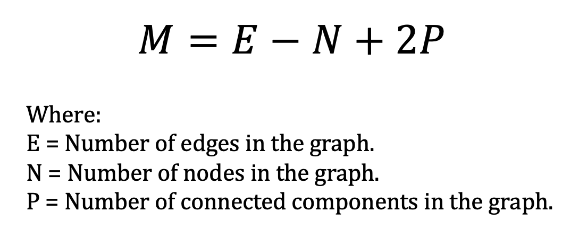
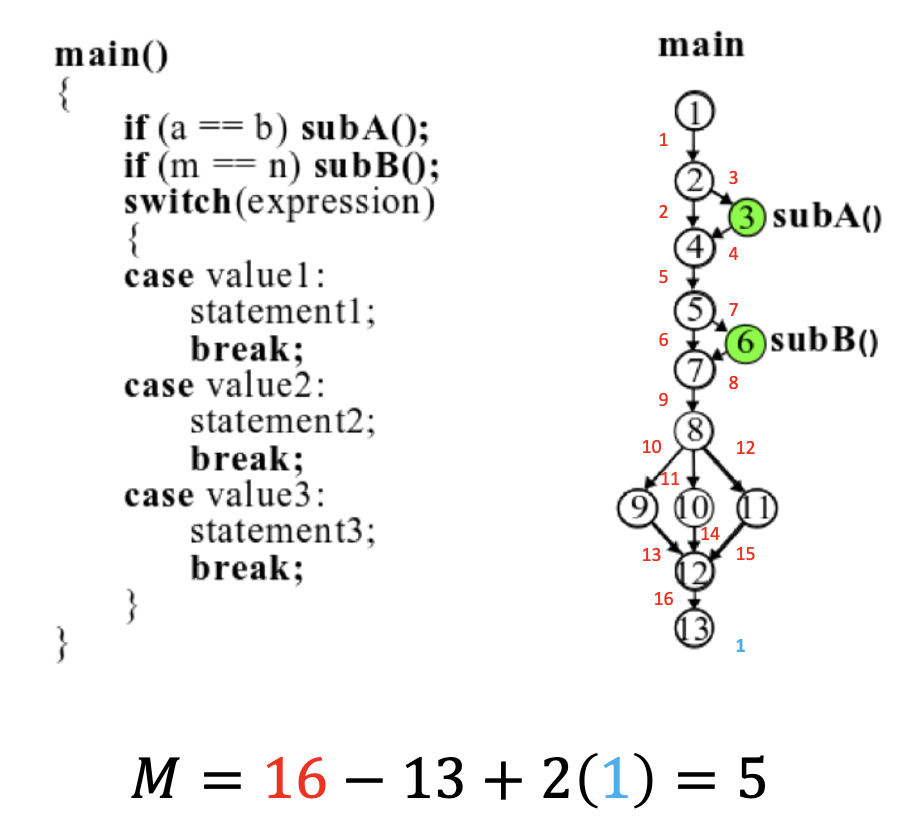

Exploring the Cyclomatic Complexity’s Relevance Today
Cyclomatic complexity is a metric that can be used to measure the complexity of a program. Complexity is calculated by considering all the possible independent paths that can be traversed from start to finish (Pillai, 2017).
Cyclomatic complexity can be a useful metric used by developers to have a good approximation of complexity of code being developed. Managers can find this metric useful because it can help them to predict the necessary resources it will take to maintain functionalities of the system (Ferrer et al., 2012).
One weakness of cyclomatic complexity is that it does includes complexity added by nested conditionals or other pieces of code such as classes (Ferrer et al., 2012).
McCabe cyclomatic complexity is measured by using the control flow graph of a code. Nodes represent the blocks inside the program and edges represent flow from one block of code to another (Ferrer et al., 2012).
According to Pillai, 2017, McCabe cyclomatic complexity can be expressed as:
Next example shows the calculation of cyclomatic complexity with a source code and control flow graph example.
Studies have found strong positive correlation between the cyclomatic complexity and defects in code: the higher the complexity, the larger the number of faults. In addition, it has been found a connection between complexity and difficulty to understand software (Ferrer et al., 2012).
In conclusion, cyclomatic complexity should continue to be used as a metric for developers, testers and managers to understand in which parts of the program more resources and efforts may be foucused. Though cyclomatic complexity does not directly enforces security of a program, understanding high cyclomatic complexity values in specific parts of the code may improve security by placing more testing efforts in exercising paths that may contain vulnerabilities in more complex parts of the program. This understanding could also help by reducing code coupling and increasing its cohesion, so the code is easier to reutilize, maintain and implement additional security features.
References:
Pillai, A.B. (2017) Software Architecture with Python. Birmingham, UK. Packt Publishing Ltd.
Ferrer, J., Francisco, C. and Enrique, A. (2012) Estimating Software Testing Complexity. Information and Software Technology.